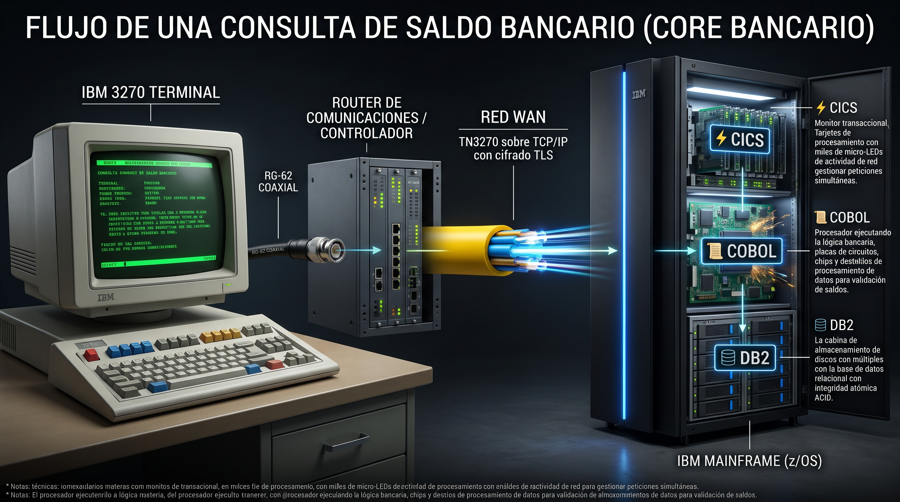

🖥️ 1. IBM 3270 Terminal
SUCURSAL
Monitor CRT curvado de fósforo verde con teclado mecánico. Opera en Modo Bloque: al pulsar [ENTER] empaqueta los 1.920 caracteres de la pantalla en un solo telegrama de datos.
24 filas × 80 columnas • Puesto Cajero
🔌 2. Cable Coaxial & Router
PASARELA
Cable coaxial blindado RG-62 con conector metálico BNC que viaja al router de comunicaciones de 19 pulgadas con LEDs parpadeantes de actividad.
Conector BNC • Router Telecom 19"
🌐 3. Red WAN / Internet
ENLACE FIBRA
El protocolo TN3270 viaja sobre TCP/IP con cifrado TLS de grado bancario. Un túnel de fibra óptica transporta los haces de luz al búnker central en menos de 15 ms.
TN3270 / TCP/IP • Cifrado TLS
🏢 4. Host IBM (z/OS)
BÚNKER DATA CENTER
Armario rack negro z16 con su franja azul neón. En su interior conviven:
⚡ CICS (monitor transaccional),
📜 COBOL (reglas contables) y
🗄️ DB2 (base de datos relacional ACID).
CICS ➔ COBOL ➔ DB2 (99.99999% uptime)